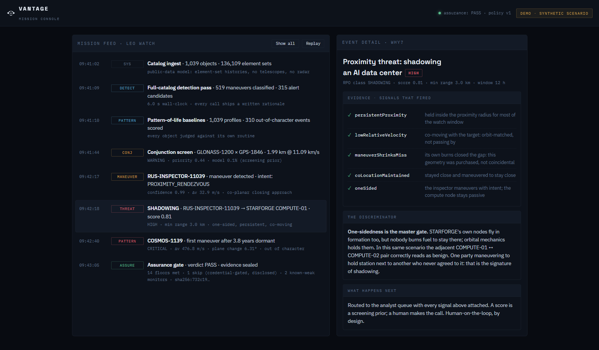

under 15 km
Russian inspector holding station beside Intelsat 39, recomputed daily
Vantage reads satellite behavior from public orbital data. No telescopes, no radar.
Subtract what nature does to an orbit. Whatever is left is somebody's engine.
Computed by Vantage from public CelesTrak element sets. No sensors, no credentials, reproducible.

Open connectors normalize public catalogs (CelesTrak, Space-Track) and five-year element-set histories into one data fabric.
Remove J2 oblateness and atmospheric drag; the residual is thrust, detected, measured, timestamped. 519 maneuvers on a 1,039-object catalog in 6.0 s.
Six models name intent, score conjunction and shadowing risk, and check each object against its own pattern of life.
The event arrives with the signals behind it attached, ranked so the calls that need a human get one first.
Everyone can see that a satellite moved. The tracking data is public. Vantage is the layer that tells you why.
Tells you that an object fired its engine, when, and how hard, without tasking a sensor. It works by subtracting the drift physics explains, the Earth's equatorial bulge (J2) and atmospheric drag, from the object's public element-set history. Whatever residual Δv is left is somebody's engine.
Tells you what the burn was for: station-keeping, an orbit raise or lower, a rendezvous, or collision-avoidance. Each call carries a confidence band and a written rationale from a rule-based model, so an analyst can check the reasoning rather than take it on faith. No black box to trust.
Tells you whether something is deliberately shadowing one of your assets, or merely passing close. It separates a purchased geometry from an incidental pass and from a benign co-orbiting formation. One-sidedness is the discriminator, shown under Evidence.
Tells you which close approaches are worth an analyst's morning, ranked. Screening is calibrated against 162,634 ESA close-approach reports, scoring 0.963 ROC-AUC and 0.010 Brier on that set. Public element sets carry no covariance, so this is a labeled screening prior, not an operational probability of collision.
Tells you when an object breaks its own routine, judged against itself rather than a fleet average. Each one is baselined on its own history (activity class, maneuver cadence, burn size) and new behavior is scored against the prior that existed before it. Dormant-then-active is the classic early warning. The behavioral model is now learned rather than hand-tuned: fit from labelled data and scored by an exact port of the public SPLID benchmark's official evaluator, where on held-out data it more than quadruples the F2 of the fixed-rule baseline it replaces.
Tells you what to do about it: the smallest engine burn that keeps a threatened asset outside its keep-out volume, within the propellant it actually has left. The solver blocks an approach before it enters the volume, or opens the range when the intruder is already inside, and a pass that already clears draws no recommendation at all. Every dodge carries its burn direction, execution time, fuel cost, and the miss distance it buys. Scored on the replayed reconstruction corpus: three labelled-synthetic campaigns and two benign controls.
Turns the warning queue into a schedule: which object each sensor should look at next, so a network spends its scarce minutes where the uncertainty and the threat are, not on whatever happens to be overhead. The scheduler is trained against a myopic baseline on held-out scenarios built with real visibility geometry, and its corrections are legible: it breaks from the greedy pick to catch a closing pass, or an object about to set, that the myopic choice would strand. This is the kill-chain gap the government keeps naming, tasking the right thing at the right time.
The same discipline pointed inward, at a satellite's own telemetry: flag the segment where a channel breaks its nominal pattern, a spike, a stuck sensor, a slow drift, before an operator would catch it by eye. It is built and scored in the shape of the public OPS-SAT anomaly benchmark, with a detector fit only on healthy history so it needs no catalogue of past failures to recognize a new one. This is the commercial edge of the same machinery, for fleet operators as much as for defense.
Anyone can publish a detection. The question a defense buyer actually has is whether it survives being checked, so Vantage shows what separated the call from the benign case, then grades itself in public and ships the receipt.
Two nodes in the same formation hold their spacing because orbital mechanics puts them there. Neither one spends propellant to stay.
One party maneuvers to hold station next to another that never agreed to it. That asymmetry is what separates a shadower from a neighbor.
Same geometry in both cases, same separation, same closing rate. The only difference is which side is spending propellant to be there, and on the seeded scenarios that difference alone carries the call at 100%.
Change one number and the seal breaks.
Every model behind the feed is graded on every release against explicit, versioned acceptance floors: detection recall, false-alarm rate, collision calibration, shadower recall. The result is sealed into a tamper-evident bundle, so a reviewer can re-check the claim instead of trusting it. The collision floor is calibrated against 162,634 real ESA close-approach reports, and the 1 SKIP is the real-data check itself: credential-gated, disclosed, never silently passed.
sealed sha256:732c19…
Open this gate running in the console synthetic scenario, real engine outputEach one gets its own acceptance policy: floors on recall, false alarms, and calibration tuned to which failure is unforgivable.
Orbital compute nodes combine high-value hardware, limited propellant, and long replacement timelines. Operators need to distinguish a deliberate approach from ordinary formation geometry before committing to a response.
Talk to us about orbital infrastructure →You have to call it, routine or a threat worth acting on, and defend that call to leadership. Vantage names what the object did and why, tells a deliberate shadow from an incidental pass, and runs on your own servers, even air-gapped.
Talk to us about protected-asset watch →Was that a normal station-keep, the first sign a bus is failing, or someone parking alongside? Vantage baselines every satellite against its own pattern of life and flags what breaks it, named in operator terms and calibrated to keep false alarms off your on-call rotation.
Talk to us about fleet watch →Book a technical briefing with the Vantage team. We'll walk your mission set and run a live detection-to-evidence loop end-to-end.